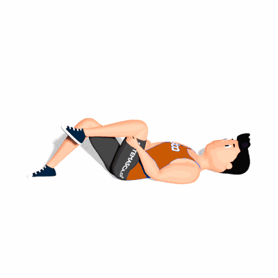

Flexão de Joelho com Alongamento de Lombar

O exercício irá trabalhar o alongamento para da região lombar e pernas.
Ficha Técnica
Tipo: Alongamento
Grupo Muscular: Corpo
Aparelho: Nenhum
Músculos: Nenhum
Como realizar
- Deitado de barriga para cima;
- Mantenha uma das pernas com o joelho flexionado;
- Com a outra perna realize flexão do joelho e segure a perna puxando para perto do tronco o máximo possível, essa é sua posição inicial;
- Agora realize a extensão máxima do joelho e retorne a posição inicial;
- Ao terminar as repetições, realize os movimentos com a outra perna.
 RC STORE
RC STORE